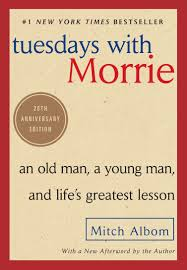

- Home
- Browse
Paranormal Stories
Read the stories we love

 The Black Spider
The Black Spiderby Jeremias Gotthelf
Ratings
A short, fairly nasty little folktale where the Green Man (let’s just call him what he is: the devil) makes a pact with a village. In the way of such things, the villagers renege on their pact and the Green Man takes his revenge in the form of the titular creature. Some may find the Catholic guilt overtones a little much, but it’s a product of its time.The Pilo Family Circusby Will Elliott
Ratings
You want something a little odd, a bit twisty, a shade darker? Elliott’ll get you sorted out good. Our intrepid narrator ingests some beads he found inside a velvet sack, which was tossed behind the bushes by a trio of sinister clowns … why? His transformation—both mentally and physically—drives the plot of this strange and spooky book.Ghost Storiesby Muriel Spark
Ratings
A short and startling book of atmospheric short stories having to do with, you guessed it, ghosts. Fans of The Twilight Zone and Alfred Hitchcock Presents will be delighted by these incredibly well-told spine-tinglers.Come Closerby Sara Gran
Ratings
A startling number of writers have told me that this is either the best, or one of the best books they’ve ever read. It’s short (come to think of it, that’s a common feature of many books on this list), exquisitely written, and downright freaky. If demonic possession scares you witless, you may want to avoid this one—or purchase it immediately, if you enjoy being scared thusly.The Picture of Dorian Grayby Oscar Wilde
Ratings
It’s a classic for a reason. Everyone knows the basic of the plot; it’s such a versatile idea that it’s been done and redone in a thousand ways, subtle variants on the theme. But Wilde’s style is inimitable, and his character, preening ole Dorian, would fit right in with today’s Instagrammers and YouTubers.The Devil in Silver
by Victor LaValle
Ratings
LaValle’s The Changeling and The Ballad of Black Tom are excellent, but his third novel hits all the right notes. Shades of One Flew Over the Cuckoo’s Nest, with the patients at a mental hospital battling the uncaring staff and a monster (of sorts) roaming the halls.The King in Yellowby Robert W. Chambers
Ratings
Another classic. Uncanny is the best word that applies to this one. It’s the sort of book that, after you read it, you’ll see how massive its influence has been—many modern-day books of horror of speculative fiction borrow some of the themes that Chambers introduced.Fledglingby Octavia Butler
Ratings
Butler is a master, and Fledgling was her first novel after a seven-year hiatus. She came back with a bang. On the surface this is a vampire novel. . .but Butler uses the hoary myth of the bloodsucker to comment on race, belonging, and otherness. Everything Is Fucked
Everything Is Fucked
by Mark Manson
Ratings
Mark Manson follows his previous #1 international bestseller with this guide discussing the problems we currently have surrounding hope. Despite believing that we live in the best time in human history, Mark outlines that everything seems to be pretty messed up. There is global warming, corrupt governments, collapsing economies, and everyone is getting offended far too easily. Mark examines our relationships with money, entertainment, and the internet, and discusses that too much of these good things can destroy us. Thusday with Morrieby Mitch Albom
Ratings
This novel which shared the wisdom Mitch Albom received from his college professor Morrie Schwartz, has sold over 12 million copies around the world. In this book, Mitch joins Morrie through the final months of his dying professor’s life every Tuesday to discuss the important messages of life in a truly beautiful and heartwarming fashion. In the end, the two come together to create one final class: lessons on how to live a good life.